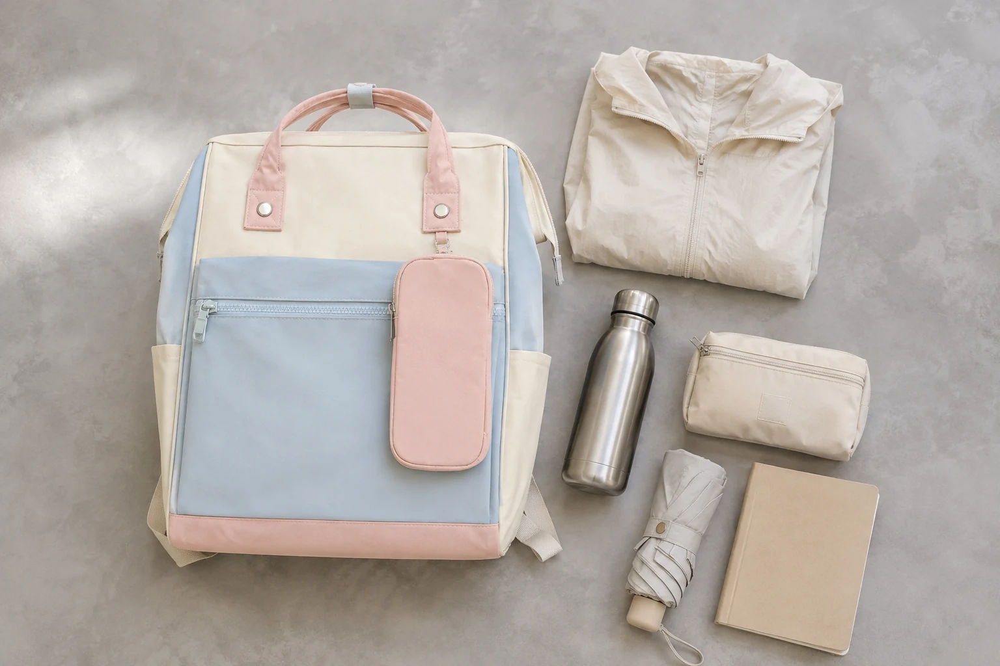

당일치기 나들이 백팩 짐싸기: 가볍게 챙기는 4구역 수납법

당일치기 나들이는 숙박 짐이 없어서 간단해 보이지만, 혹시 필요할지 모르는 물건을 하나씩 더하다 보면 가방이 금세 무거워집니다. 출발 전에 일정과 날씨를 확인하고, 물건을 네 구역으로 나누면 필요한 것을 찾기 쉽고 귀가 후 정리도 짧아집니다.
준비 전: 바닥에 전부 펼쳐 보세요
가방에 바로 넣지 말고 가져가려는 물건을 한곳에 펼칩니다. 휴대전화와 지갑처럼 반드시 필요한 것, 물병과 얇은 겉옷처럼 일정에 따라 필요한 것, 없어도 일정에 영향이 적은 것으로 나누세요. 마지막 묶음은 한 번 더 덜어내는 것이 당일치기 짐을 가볍게 만드는 가장 쉬운 방법입니다.
1구역: 등에 가까운 안쪽에는 평평한 물건
작은 태블릿, 안내 자료, 얇은 노트처럼 평평한 물건은 가방이 제공하는 안쪽 수납칸에 넣습니다. 기기의 실제 크기가 수납칸 범위에 맞는지 확인하고, 열쇠나 충전기 같은 단단한 물건과 직접 맞닿지 않도록 분리하세요.
2구역: 아래쪽에는 부피가 있지만 가벼운 물건
얇은 겉옷이나 작은 수건은 접어서 메인 수납칸 아래쪽에 둡니다. 빈 공간을 채우면서도 다른 물건에 눌려 문제가 없는 것을 고르면 가방의 형태를 정돈하기 쉽습니다. 갑자기 꺼낼 가능성이 있다면 지퍼를 열었을 때 바로 보이는 방향으로 접습니다.
3구역: 물병과 젖을 수 있는 물건은 분리
물병은 뚜껑을 단단히 닫고, 가방에 전용 외부 포켓이 있다면 실제 물병의 지름과 높이가 맞는지 확인합니다. 내부에 넣어야 한다면 전자기기와 종이류에서 떨어진 구역에 세워 둡니다. 자세한 선택 기준은 물병 수납 백팩 점검표에서 확인할 수 있습니다.
4구역: 자주 찾는 작은 물건은 한 포켓
교통카드, 립밤, 손수건, 이어폰처럼 자주 꺼내는 물건은 작은 파우치나 앞쪽 포켓 한곳에 모읍니다. 작은 물건마다 다른 포켓을 쓰면 찾는 시간이 늘 수 있으므로, 사용 횟수가 비슷한 것끼리 묶는 편이 간단합니다. 중요한 물건은 열려 있는 외부 포켓보다 닫을 수 있는 구역에 둡니다.
출발 직전 체크리스트
- 오늘 일정과 날씨를 확인했나요?
- 없어도 되는 물건을 한 번 더 뺐나요?
- 물병과 전자기기를 분리했나요?
- 자주 쓰는 물건의 위치를 정했나요?
- 지퍼를 모두 닫고 직접 메어 균형을 확인했나요?
집에 돌아오면 영수증과 쓰레기를 꺼내고 사용한 파우치와 물병을 비웁니다. 다음 날까지 내용물을 그대로 두지 않으면 가방이 점점 무거워지는 일을 줄일 수 있습니다. 평일용 정리가 필요하다면 매일 짐을 줄이는 수납 루틴을 이어서 읽어보세요.
참고·안내
- Himawari 제품별 크기·수납 정보
- 날씨와 방문 장소의 안내에 맞춰 개인 준비물을 조정해 주세요.
자주 묻는 질문
당일치기에도 큰 백팩이 필요한가요?
일정과 날씨, 개인 준비물에 따라 다릅니다. 평소 짐을 먼저 펼친 뒤 얇은 겉옷과 물병이 무리 없이 들어가는 크기인지 확인하세요.
물병은 백팩 안에 넣어도 되나요?
제품의 수납 구조에 맞춰 사용하되, 뚜껑을 완전히 닫고 전자기기나 종이와는 분리하는 편이 좋습니다.
파우치를 여러 개 써야 하나요?
파우치 수보다 용도를 구분할 수 있는지가 중요합니다. 작은 물건이 흩어질 때만 필요한 만큼 사용하고, 내용이 보이지 않으면 간단히 분류해 두세요.